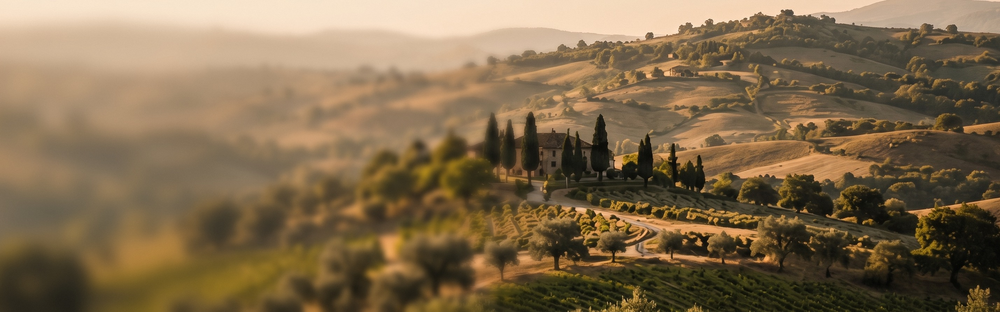
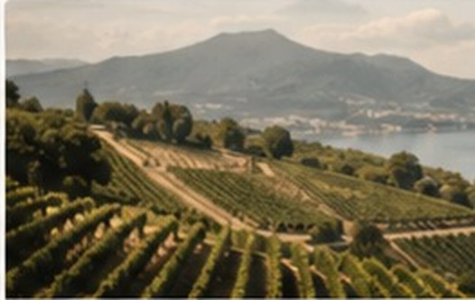
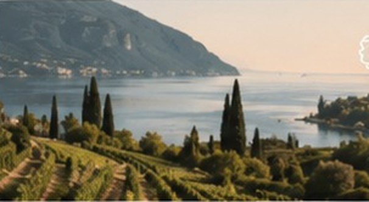

Regionen Italiens
Maria Maria arbeitet mit ausgewählten, familiengeführten Weingütern in Italien zusammen. Jede Region bringt ihren eigenen Charakter, ihre Böden, ihr Klima – und Geschichten hervor, die man schmeckt.
Entdecken Sie unsere Regionen

Apulien
Sonne, Meer und rote Erde. Apulien ist das Herz des Südens – weitläufige Ebenen, alte Reben und warme Brisen vom Ionischen und Adriatischen Meer prägen kraftvolle, fruchtbetonte Weine mit mediterraner Seele.
Mehr über ApulienWeine aus Apulien
Primitivo 14,5
Primitivo 15,5
Primitivo Salento IGP
Rosato Puglia

Kampanien
Zwischen Vulkan und Meer. Die mineralischen Böden rund um den Vesuv schenken Weinen Spannung, Frische und Tiefe. Hier verbinden sich Tradition, Leidenschaft und ein unverwechselbares Terroir zu eleganten Klassikern.
Mehr über KampanienWeine aus Kampanien
Greco di Tufo D.O.C.G.
Falanghina
Il Rosso – Aglianico
Il Bianco – Greco Cuvée

Gardasee / Lugana
Das milde Klima, die sanften Hügel und die kalkhaltigen Böden am Südufer des Gardasees schaffen Weine von großer Eleganz und Frische. Lugana steht für Mineralität, Feinheit und mediterrane Leichtigkeit.
Mehr über LuganaWeine vom Gardasee
Lugana
Warum Regionen wichtig sind
Jede Region Italiens hat ihre eigene Sprache: andere Böden, anderes Klima, andere Rebsorten – und Menschen, die mit Hingabe arbeiten. Wir glauben, dass Herkunft zählt. Sie verleiht unseren Weinen Authentizität, Charakter und Seele.